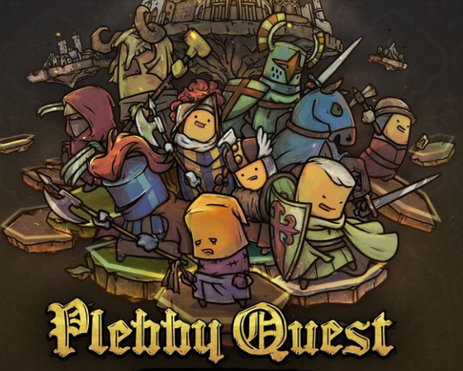
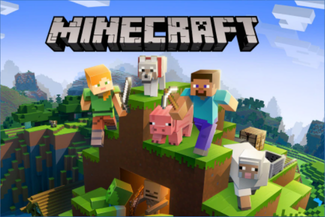
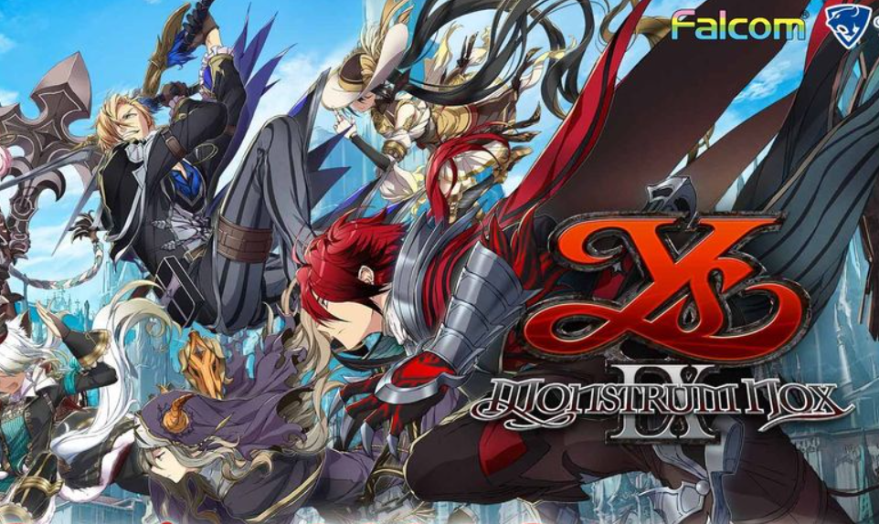
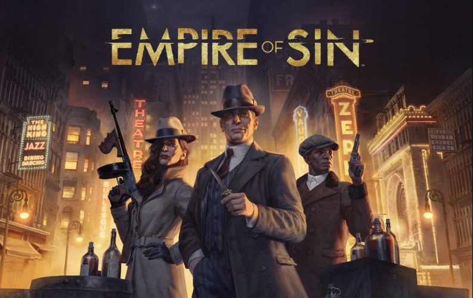
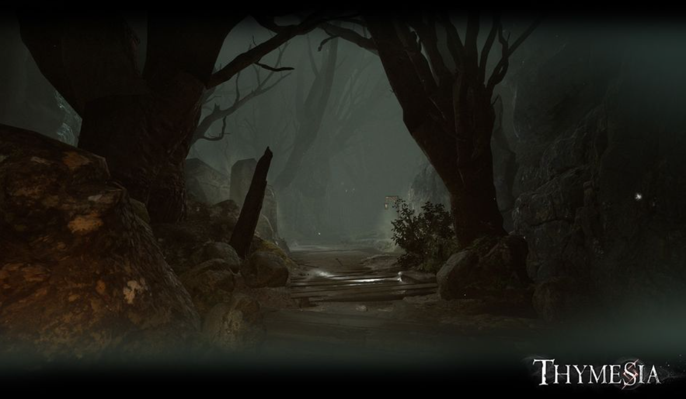
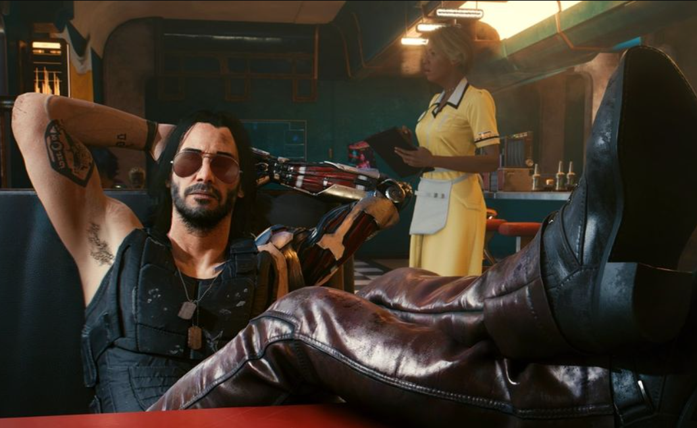

商店
最新消息
討論區
關於我們
客服支援
登入
商店
最新消息
討論區
關於我們
客服支援
登入
最新消息
迎接耶誕《糖豆人：終極淘汰賽》公開溫馨同樂影片 限時推出免費佳節造型
《星露谷物語》PC 版今日釋出 1.5 版免費大更新 開放全新區域、新農場
《烈火戰馬》開發商打造、線上戰爭沙盒遊戲新作《帝國神話》曝光

《冒險之旅：十字軍東征》更新新模式「混沌之地」

《我的世界》中國版代理商網易控告《迷你世界》、《奶塊》侵權 法院一審勝訴
新聞 |
今天: 10點 21分
《我的世界 Minecraft 》中國版代理商網易今日發表公告，針對兩款與《我的世界》概念相似的中國遊戲作品《迷你世界》、《奶塊》說明訴訟進度，根據公告中指出法院已經做出一審判決，《迷你世界》應立即停止侵權行為，《奶塊》也應刪除遊戲與宣傳全部侵權畫面。
1028
212

《伊蘇 IX -怪人之夜-》Switch / PC 版 2021 年夏季登場
新聞 |
今天: 9點 31分
雲豹娛樂今（1）日宣布，由 NIHON FALCOM 開發的動作 RPG《伊蘇 IX -怪人之夜-》將於 2021 年夏季在亞洲地區推出 Nintendo Switch 版 / Steam 版。 此外，Switch 版 / Steam 版也收錄了 PS4 版推出的各種專用服裝、裝飾道具等額外內容。
999
91

《罪惡帝國》新公開 2 位老大的資訊 同時揭露經營非法事業賺取金錢等內容
新聞 |
今天: 9點 22分
世雅股份有限公司公開新作犯罪策略遊戲《罪惡帝國》第 4 波遊戲資訊。在第 4 波遊戲資訊中，將為大家介紹 2 位新的老大， 以及暴力與金錢世界中不可或缺的「地下酒館」、「招待所」、「賭場」等非法事業的經營策略。
1199
281

《Thymesia：記憶邊境》開放新版本試玩 目前進度完成關卡、戰鬥系統基礎
新聞 |
今天: 8點 59分
由台灣獨立遊戲開發團隊「極度邊緣工作室（OverBorder Studio ）」研發的灰暗華麗風動作遊 《Thymesia：記憶邊境》以寫實的美術風格及中世紀的黑暗風格渲染出籠罩著死亡氣息的遊戲氣氛。於 2021 台北國際電玩展現場展出，並開放試玩。
889
381

《電馭叛客 2077》刪除換身體 Mod 以防止玩家與基哥飾演的強尼・銀手發生性關係
新聞 |
今天: 10點 21分
CD Projekt RED 近日關閉了《電馭叛客 2077（Cyberpunk 2077）》一個可以換角色身體的 Mod (本質是讓玩家可以把某角色的外型材質換到另一角色上)。 以防止玩家角色與基努李維飾演的強尼・銀手發生性關係。 官方聲明指出，在製作粉絲向內容時，創作者必須確保獲得所有相關方面的許可。
1249
351
«
1
2
3
4
5
6
7
»